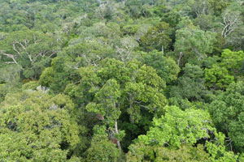
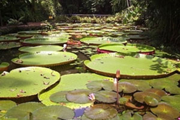

O Bioma Amazônico
O Bioma Amazônico chega ocupar uma área de 4.196.943 Km², que
corresponde mais de 40% do território nacional e é constituída
principalmente por uma floresta tropical. A Amazônia passa pelos
territórios do Acre, Amapá, Amazonas, Pará e Roraima, e parte do
território do Maranhão, Mato Grosso, Rondônia e Tocantins. A
Amazônia é formada por distintos ecossistemas como florestas
densas de terra firme, florestas estacionais, florestas de
igapó, campos alagados, várzeas, savanas, refúgios montanhosos e
formações pioneiras. Mesmo sendo o nosso bioma mais preservado,
cerca de 16% de sua área já foi devastada, o que equivale a duas
vezes e meia a área do estado de São Paulo.
O desmatamento, as queimadas, a garimpagem, o agropastoreio e a
biopirataria representam os principais problemas ambientais
enfrentados pelo bioma amazônico. O conjunto formado por essas
ações devastadoras é responsável por graves mudanças climáticas
em todo o planeta, como o aquecimento global. Amazônia é
considerada um grande “resfriador” atmosférico e como maior
abrigo da biodiversidade do mundo.
Fauna
Pesquisas indicam que na Amazônia existem cerca de trinta milhões de espécies animais. Dá para acreditar? E isso porque nem todas as espécies foram encontradas e estudadas pelos cientistas. Lá existem alguns animais que ainda são desconhecidos pelos homens.
Bom, mas uma coisa é certa: são muitos animais convivendo neste grande ecossistema. Talvez, os mais famosos deles sejam os macacos. Eles são numerosos: coatás, guaribas, barrigudos, entre outros. Uma infinidade de primatas pode ser encontrada nos galhos das árvores amazônicas. Além deles, existem outros mamíferos característicos da região. São mamíferos terrestres, como onças, tamanduás, esquilos, e mamíferos aquáticos, como peixes-boi e botos.
Os répteis também têm território garantido. Em um passeio pela região podem ser vistos lagartos, jacarés, tartarugas e serpentes. Entre os anfíbios, existem variados tipos de rãs, sapos e pererecas. Uma grande coleção de peixes é outro fato digno de nota: nas águas amazônicas estão 85% das espécies de peixes de toda a América do Sul. Todos os anos milhares deles migram tentando encontrar locais adequados para reprodução e desova. É o que se chama Piracema.
Outros seres ainda menores, têm grande importância no equilíbrio deste ecossistema: os insetos. Eles estão na terra, na água e no ar, exemplo: besouros, formigas, mariposas e vespas fazem parte do grupo que é maioria na fauna amazônica. Há também grande variedade de aves na floresta, como por exemplo, araras, papagaios, periquitos e vários outros. Um deles, são os tucanos que colorem as copas das árvores. Mais de mil espécies de aves já foram catalogadas.
Vegetação
A vegetação divide-se em três categorias: matas de terra firme, matas de várzea e matas de igapó.
As de terra firme são aquelas que estão em regiões mais altas e por este motivo não são inundadas pelos rios. Nelas estão árvores de grande porte, como a castanheira-do-pará e a palmeira.
As matas de várzea são as que sofrem com inundações em determinados períodos do ano. Na parte mais elevada desse tipo de mata, o tempo de inundação é curto e a vegetação é parecida com a das matas de terra firme. Nas regiões planas, que permanecem inundadas por mais tempo, a vegetação é semelhante a das matas de igapó.
 As matas de igapó são as que estão situadas em terrenos mais baixos. Estão quase sempre inundadas. Nelas a vegetação é baixa: arbustos, cipós e musgos são exemplos de plantas comuns nestas áreas. É nas matas de igapó que encontramos a vitória-régia, um dos símbolos da Amazônia.
Solo
O solo da floresta amazônica é em geral bastante arenoso. Possui uma fina camada de nutrientes que se forma a partir da decomposição de folhas, frutos e animais mortos. Esta camada é rica em húmus, matéria orgânica muito importante para algumas espécies de plantas da região. Em áreas desmatadas, as fortes chuvas “lavam” o solo, carregando seus nutrientes. É o chamado processo de lixiviação, que deixa os solos amazônicos ainda mais pobres. Apenas 14% de todo o território pode ser considerado fértil para a agricultura.
Mas se apenas essa pequena parte é fértil, como existem tantas árvores? Aqui está um dos pontos essenciais para o equilíbrio do ecossistema.
Neste processo a camada de húmus tem um papel fundamental. Além disso, os poucos nutrientes presentes no solo são rapidamente absorvidos pelas raízes das árvores, e estas plantas, por sua vez, tornam a liberar nutrientes para enriquecimento do solo. Trata-se de uma constante reciclagem de nutrientes.
Relevo
As planícies são constantemente inundadas pela água dos rios. Na região de planaltos existem algumas serras, como as de Taperapecó, Imeri e Parima. Ficam na Amazônia as formações de relevo mais baixa – planície Amazônica – e mais alta – planalto das Guianas – do país. É nesse planalto que se encontra o Pico da Neblina, ponto mais alto do Brasil, com cerca de 3.015 metros.
Compõem o bioma Amazônia planícies (terrenos com pouca variação de altitude), depressões (tipo de relevo aplainado, onde são encontradas colinas baixas) e planaltos (terrenos com superfície elevada).
Água
A água é um importante componente em um ecossistema. Isto porque a água é fundamental para a vida. No caso da floresta amazônica, a água doce é abundante: trata-se da maior bacia hidrográfica do planeta. Seu principal rio é o Amazonas, que possui mais de mil afluentes (rios menores que nele deságuam), é o mais largo do mundo e grande responsável pelo desenvolvimento da floresta.
Os rios influenciam a vida dos animais e, como você já viu, a vegetação do lugar. De forma geral, são classificados em três tipos: rios de águas barrentas, de águas claras e águas pretas.
Por fim, os rios de águas pretas são assim denominados por nascerem em terrenos de planície e carregarem a areia e o húmus que caracterizam o solo de tais terrenos. O húmus é o grande responsável pela cor escura das águas. O mais conhecido rio amazônico de aguas pretas é o rio Negro.A coloração da água varia de acordo com determinadas substâncias que podem ser encontradas nos rios. Os chamados rios de águas barrentas, como o Madeira e o próprio Amazonas, têm a cor da água modificada por serem ricos em sedimentos e nutrientes. Os de águas claras, como o Xingu, o Tapajós e o Trombetas possuem muitos trechos de corredeiras e cachoeiras. Estes rios não banham tantos terrenos ricos em nutrientes como os de água barrenta. Desta forma apresentam água mais cristalina.
Clima
Na região amazônica chove bastante e a temperatura é elevada, normalmente variando entre 22ºC e 28ºC. É o chamado clima equatorial úmido, que caracteriza algumas áreas próximas à linha do Equador. E como o clima interfere? Pelo que vimos até aqui, você já deve imaginar alguma forma… Por exemplo: de acordo com a intensidade das chuvas sobe o nível dos rios; com o aumento do nível dos rios algumas áreas podem ser alagadas e, uma vez alagadas, essas áreas podem ser mais ou menos adequadas à vida de determinados vegetais e animais.
Fatores como o clima, relevo, solo e água interferem na vida de animais e vegetais. Não foi isso que vimos ser a definição de um ecossistema? A relação entre seres vivos e não vivos em uma região? Pois é, quando falamos da Amazônia existe ainda uma outra relação que está colocando em risco o equilíbrio do ecossistema. A relação entre os homens e a floresta.